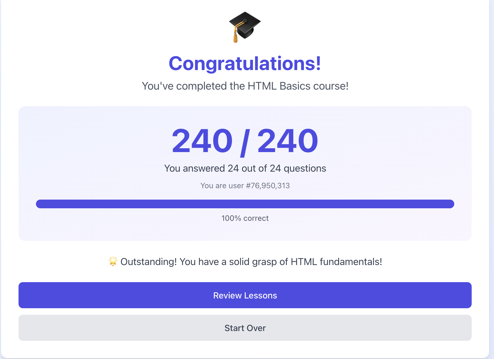

Module 4
Due: 2.17.2026
1. Add to the form in your growing demo page of HTML commands, commands, commands, commands. Make sure it is linked from your HW4 as the answer to this question/question/ so we do not have to hunt for it. It is becoming a kind of dictionary of HTML commands, commands, commands, commands.
HTML Reference2. Self Study HTML Game 
3 & 4 - For some system at UALR (registration, or choose another
one), or for the process of getting to UALR (involving travel
authorizations and so on), analyze it using FMEA. You can
investigate just one failure mode. For this question, identify which
possible causes are reasonable and which can be excluded. Using
this, give suggestions about potential improvements.
NOTE: I had completed this question in the form it was in last year.
The question changed after I completed the assignment
In the course registration process within Workday, I focused on one failure mode: a prerequisite not being recognized. Reasonable causes included missing transcript data or system sync issues, while unlikely causes, like the student not existing in the system, were excluded. Based on that, I’d suggest improvements such as automated transcript validation, smoother data syncing, and clearer real-time notifications during registration.
5. Apply the 5 Whys technique to the same system that you just addressed.
Using the 5 Whys on the same issue—prerequisite not recognized—I started with the problem: the system didn’t recognize the prerequisite. Why? The transcript wasn’t in the system. Why? It hadn’t been digitized. Why? A staffing freeze delayed that step. Why? The process relied entirely on manual entry. Why? Leadership hadn’t planned for automation or backup. The root cause was that manual processes had no fallback. This points directly to a need for automation or contingency plans.
6. Compare the applicability and results of 5 Whys? and Failure
Mode Effects and Analysis (FMEA) on this problem, and briefly
discuss what kinds of other problems would be more (or less)
suitable for each technique.
FMEA helped prioritize potential failure modes by severity,
occurrence, and detection. It’s great when multiple risks need
ranking—like in complex systems with many possible issues. On the
other hand, 5 Whys drilled down to one root cause. It’s more
useful when one dominant problem needs solving. FMEA suits
technical or safety-critical processes, while 5 Whys fits process
breakdowns or recurring issues. Sometimes, both can complement
each other, offering breadth and depth and alternate lens to
evaluate the problem.
Note:The responses in this analysis were formulated through an iterative dialogue with an AI language model (GPT). The model posed probing questions and helped refine each step, ensuring clarity in both the Failure Mode and Effects Analysis (FMEA) and the 5 Whys application, ultimately guiding the comparison of both techniques."